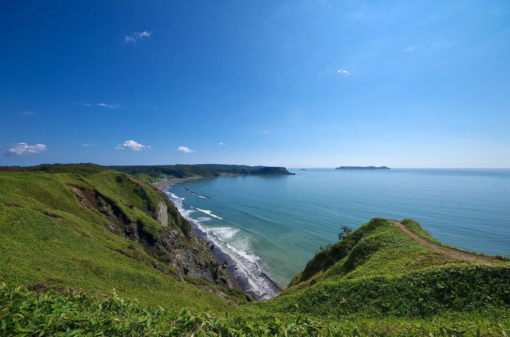
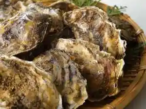
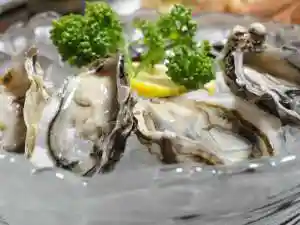
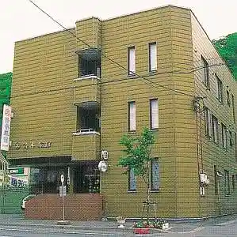
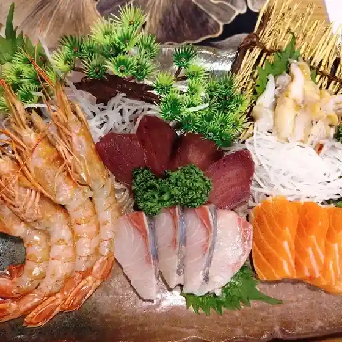
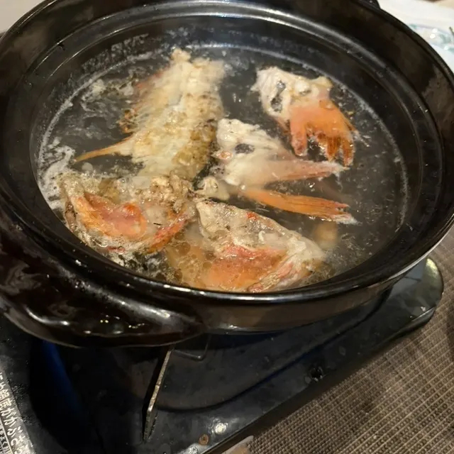
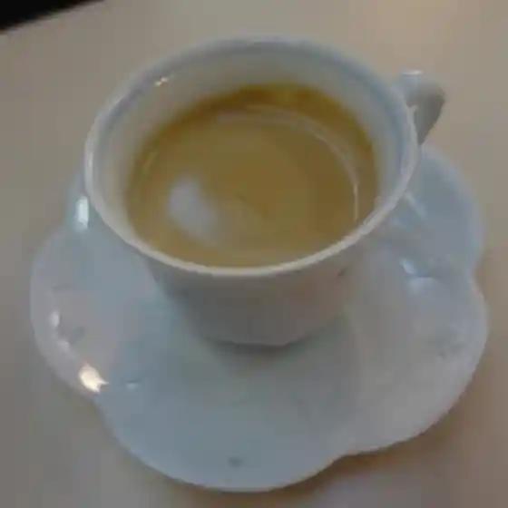
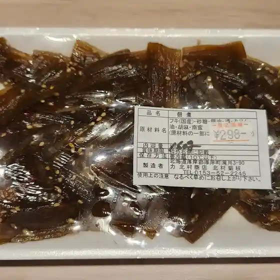
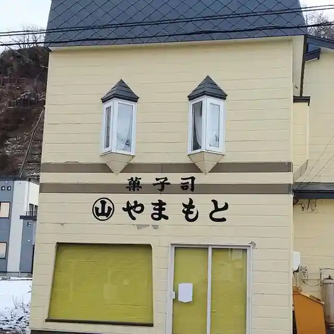
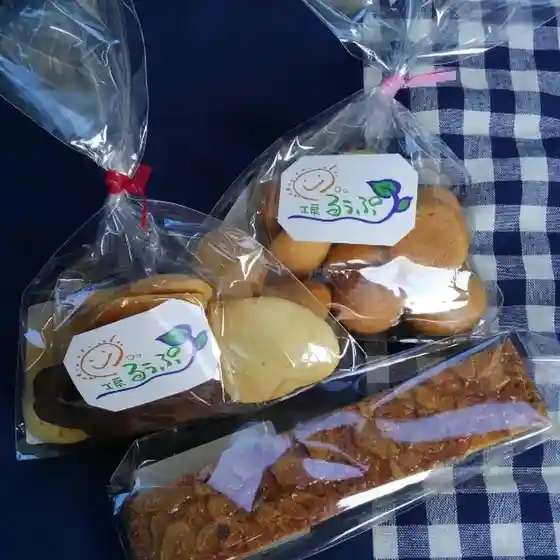

Akkeshi
Akkeshi · Hokkaido
Akkeshi
Highlighted on the Hokkaido map.

Stay
シーサイドインホテルあっけし

Shiisaidoinhoteru Akkeshi
ホテル 五味

Hoteru Gomi
丸ス 鈴木旅館

Maru Su Suzuki Ryokan
Dining
Cheee

Cheee
厚岸チーズ工房 なんくる

Akkeshi Chiizu Koubou Nankuru
夢遊

Muyuu
アポロ

Aporo
北村商店

Kitamura Shouten
セブンイレブン 厚岸港町店

Sebun'Irebun Akkeshi Minatomachi Mise
山本菓子店

Yamamoto Kashi Mise
工房るうぷ

Koubou Ruupu
エスカル
Esukaru
一福
Ichi Fuku
Aマート くしろおおた店
A Maato Kushirooota Mise
馬場商店
Baba Shouten
喜多岬
Kita Misaki
纒鮨
Ten Sushi
食王様 かさ嶋
Shoku Ousama Kasa Shima
かざぐるま
Kazaguruma
民宿あっけし
Minshuku Akkeshi
牛亭
Gyuutei
松の食堂
Matsu No Shokudou
イオン 厚岸店
Ion Akkeshi Mise
フクハラ 厚岸店
Fukuhara Akkeshi Mise
ロビンソン
Robinson
さくみ鮨
Sakumi Sushi
パンとケーキのマエダ
Pan To Keeki No Maeda